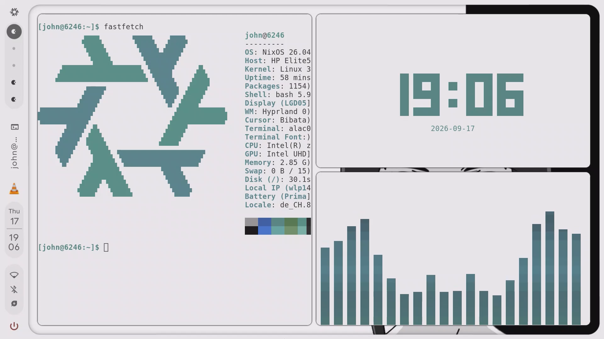
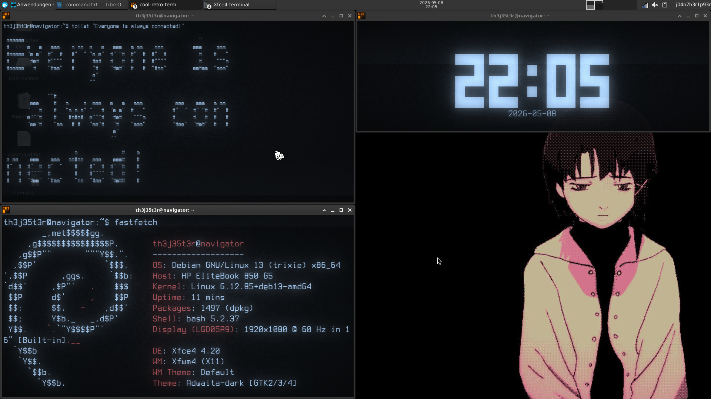
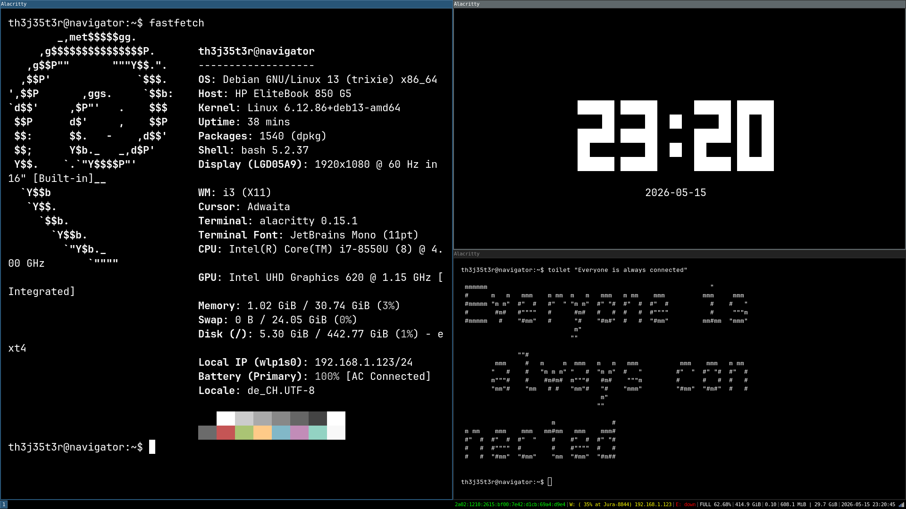
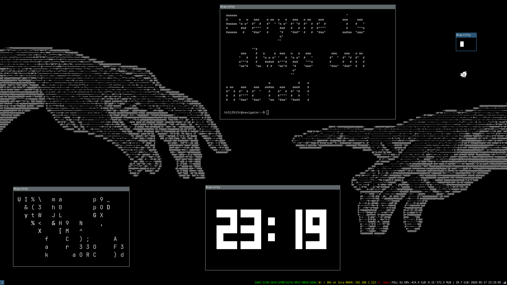

hello world
first post. this page has no trackers and no cookies, and it lives on github pages. more soon.
[𝚜𝚗𝟶𝟶𝚙𝚢@𝚗𝚒𝚡𝚘𝚜:~]$ 𝚝𝚘𝚞𝚌𝚑 𝚐𝚛𝚊𝚜𝚜
𝚝𝚘𝚞𝚌𝚑: 𝚌𝚊𝚗𝚗𝚘𝚝 𝚝𝚘𝚞𝚌𝚑 '𝚐𝚛𝚊𝚜𝚜': 𝙿𝚎𝚛𝚖𝚒𝚜𝚜𝚒𝚘𝚗 𝚍𝚎𝚗𝚒𝚎𝚍
[𝚜𝚗𝟶𝟶𝚙𝚢@𝚗𝚒𝚡𝚘𝚜:~]$
hi, i'm sn00py. i spend more time in a terminal than outside, and i'm fine with that.
i've hopped through Arch, Void and Gentoo, poked at FreeBSD, and Nix is the one that really got me: describe the whole system in a file, rebuild it, roll it back when i break it. which happens.
python is my go-to for small tools and experiments. i'm headed toward cybersecurity, but the slow, honest way: learn how things actually work first, and write my own stuff instead of just running someone else's tool and calling it hacking.
also, yes, i will talk about Neon Genesis Evangelion if you let me.
| systems | Arch, Void, Gentoo, FreeBSD, and above all Nix / NixOS |
|---|---|
| code | Python, Nix expressions, shell scripts |
| security | Cybersecurity, learned properly: fundamentals first, tools second |
| anime | Neon Genesis Evangelion |
| music | Måneskin, CUPSIZE |
| more | and many more things, the list keeps growing |
first post. this page has no trackers and no cookies, and it lives on github pages. more soon.
after arch, void and gentoo i figured i had seen it all. then i found out you can write down your whole system as code, rebuild it anywhere and undo mistakes with one command. i haven't gone back since.
the plan: understand networks and operating systems properly, write small python tools myself, and only break things in labs i set up on my own machines. no shortcuts, no script-kiddie stuff.
on repeat lately:
no embedded player on purpose: embeds load stuff from other sites and can track you. links only.



